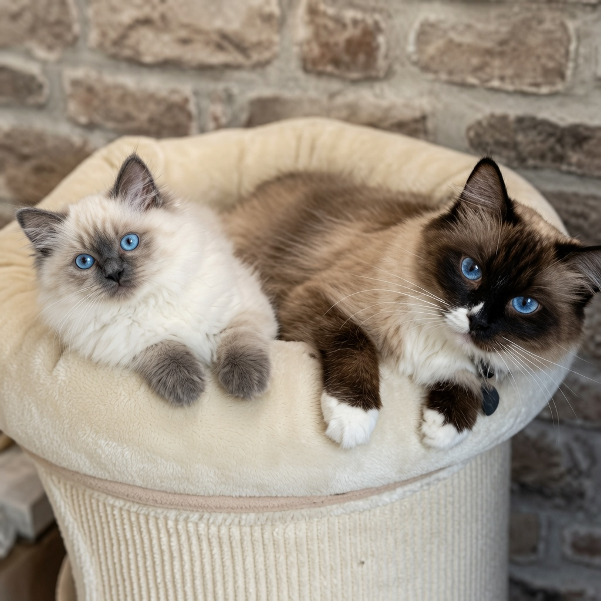
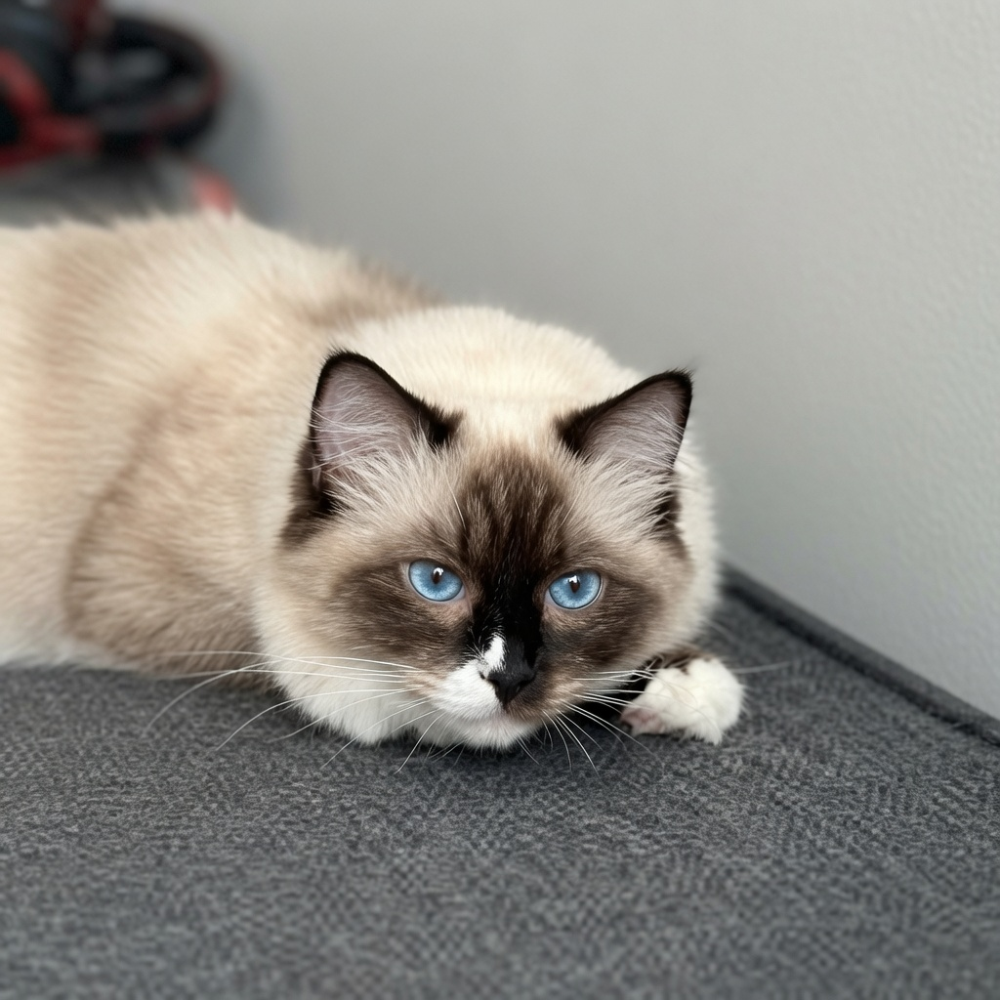

Premier contact
Vous contactez la chatterie pour présenter votre projet d’adoption, votre foyer et vos attentes.
Accueillir un chaton est une belle aventure. À la Chatterie Berceau Étoilé, chaque départ est préparé avec attention afin de respecter le rythme du chaton et de guider chaque famille avec sérieux.

Chaque famille est accompagnée avec bienveillance, avant et après l’arrivée du chaton.
L’objectif n’est pas seulement de réserver un chaton, mais de trouver une belle harmonie entre son tempérament, son évolution et votre foyer. La chatterie prend le temps d’échanger avec vous afin de comprendre votre mode de vie, vos attentes et l’environnement dans lequel le chaton grandira.
Le processus est pensé pour rester simple, transparent et rassurant, tout en laissant le temps nécessaire à la réflexion.
Vous contactez la chatterie pour présenter votre projet d’adoption, votre foyer et vos attentes.
Un échange permet de mieux comprendre votre mode de vie et de vous orienter vers un chaton adapté.
Le choix se fait selon les disponibilités, le caractère du chaton, son évolution et vos critères.
La réservation est confirmée avec un contrat et le versement d’arrhes, selon les modalités de la chatterie.
Le chaton continue de grandir, d’être observé, socialisé et préparé à rejoindre sa future famille.
Le départ se fait avec les documents nécessaires, des conseils et un accompagnement après adoption.
Les chatons quittent la chatterie lorsqu’ils sont prêts, après une période de croissance, de socialisation et de suivi attentif. L’âge exact de départ peut varier selon le chaton, son évolution et les recommandations de la chatterie.
La chatterie se réserve le droit de refuser une adoption si les conditions ne semblent pas adaptées au bien-être du chaton.

Le chaton rejoint sa famille avec les éléments essentiels pour commencer cette nouvelle étape sereinement.
Contrat, certificat de bonne santé et documents nécessaires selon la situation du chaton.
Les informations de santé et de suivi sont transmises afin de faciliter la continuité.
Un kit de départ peut accompagner le chaton pour l’aider à retrouver des repères familiers.
La chatterie reste disponible pour vous guider dans les premiers jours d’adaptation.
Quelques points importants pour mieux comprendre le fonctionnement de la chatterie avant de commencer une démarche d’adoption.
Les photos donnent une première impression, mais le tempérament et l’évolution du chaton sont aussi essentiels. La chatterie vous accompagne dans ce choix.
La réservation se fait lorsque les échanges sont avancés et que la chatterie peut confirmer qu’un chaton correspond à votre projet.
Oui. Un chaton peut être en observation avant que son orientation soit confirmée : compagnie, reproduction, réservation ou maintien à la chatterie.
Oui, l’accompagnement continue après le départ du chaton afin de vous aider dans son adaptation et ses premiers jours à la maison.
Prenez le temps de découvrir les chatons et de contacter la chatterie pour échanger autour de votre foyer, vos attentes et votre futur compagnon.